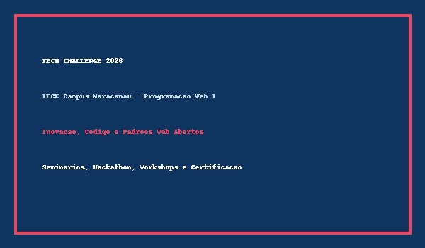

Vídeo Oficial de Apresentação
Confira o vídeo de divulgação com os destaques das edições anteriores e o que esperar do Tech Challenge 2026™:
Data: 15 a 17 de Outubro de 2026 • Local: IFCE – Instituto Federal do Ceará (Campus Maracanaú) • Modalidade: Presencial
O Tech Challenge 2026™ é o evento acadêmico de tecnologia mais aguardado do Instituto Federal de Educação, Ciência e Tecnologia do Ceará – Campus Maracanaú. Idealizado e promovido no âmbito da disciplina de Programação Web I, sob a coordenação do Prof. Daniel Ferreira, o evento visa integrar a comunidade acadêmica de Informática, Telemática e Engenharia da Computação em torno dos pilares contemporâneos da tecnologia da informação.
Durante três dias imersivos, estudantes, pesquisadores e profissionais de mercado reúnem-se para compartilhar conhecimento sobre padrões web abertos, arquiteturas escaláveis, inteligência artificial e boas práticas de acessibilidade digital. O Tech Challenge consolida-se como um laboratório vivo de inovação & criatividade, incentivando o desenvolvimento colaborativo por meio de hackathons, palestras magnas e oficinas técnicas orientadas a desafios reais da sociedade.

Para mais detalhes sobre as instalações e projetos de pesquisa do campus, acesse o Portal Oficial do IFCE. Para conhecer as recomendações internacionais sobre a estruturação de documentos na web, consulte as diretrizes do World Wide Web Consortium (W3C).
Confira o vídeo de divulgação com os destaques das edições anteriores e o que esperar do Tech Challenge 2026™:
Ouça o recado especial da comissão organizadora para todos os participantes inscritos:
Confira a programação completa distribuída entre os auditórios e laboratórios do Campus Maracanaú:
| Horário | Atividade | Local | Responsável |
|---|---|---|---|
| 08:00 – 09:00 | Sessão Solene de Abertura Oficial e Credenciamento | Auditório Central | Direção do IFCE & Coordenação de Telemática |
| 09:00 – 10:30 | Palestra Magna: "O Futuro da Inteligência Artificial e da Web Aberta" | Auditório Central | Dra. Helena Vasconcelos |
| 10:30 – 11:00 | Intervalo Institucional • Coffee Break e Network no Hall de Convivência | ||
| 11:00 – 12:30 | Mesa Redonda: "Desafios Éticos e Padrões W3C na Era da Computação Ubíqua" | Auditório Central | Prof. Carlos Eduardo e Pesquisadores Convidados |
| 14:00 – 17:30 | Oficina Técnica: "Construção de Documentos Semânticos e Acessíveis em HTML5 Puro" | Laboratório de Informática 01 | Prof. Daniel Ferreira |
| Atividade Prática de Laboratório: "Cibersegurança Defensiva e Análise de Tráfego de Redes" | Laboratório de Redes 02 | Eng. Sofia Mendes | |
| 18:00 – 21:00 | Competição / Hackathon: "Desafio de Desenvolvimento de Soluções com Software Livre" | Espaço de Inovação Aberta | Msc. Lucas Pinheiro & Comissão Julgadora |
| 21:00 – 22:00 | Premiação dos Vencedores do Hackathon e Sessão de Encerramento | Auditório Central | Comissão Organizadora do IFCE |
Preencha os dados abaixo com precisão. As inscrições são gratuitas e as vagas nas oficinas são limitadas.
Importante: Antes de preencher e submeter o formulário, consulte o Termo de Participação completo.
O período oficial de inscrições permanecerá aberto até o dia 10 de Outubro de 2026 ou até o esgotamento da capacidade física dos auditórios e laboratórios. O preenchimento das vagas das oficinas práticas é estritamente por ordem de envio do formulário eletrônico.
O credenciamento presencial terá início pontualmente às 07:30 no saguão principal do IFCE Campus Maracanaú no dia 15 de Outubro. É obrigatório apresentar:
Durante a utilização dos laboratórios de informática, não é permitido o consumo de alimentos ou bebidas próximas aos computadores. Os participantes são encorajados a trazerem seus próprios dispositivos móveis ou notebooks, caso desejem participar do Hackathon com suas próprias configurações de desenvolvimento.
Para esclarecimento de dúvidas adicionais, solicitação de condições de acessibilidade ou suporte durante a inscrição, envie uma mensagem para a coordenação através do e-mail oficial: techchallenge@maracanau.ifce.edu.br.
Este documento estabelece os termos e condições vinculantes para a participação no evento Tech Challenge 2026™, promovido pelo Instituto Federal de Educação, Ciência e Tecnologia do Ceará – Campus Maracanaú. Ao submeter a inscrição, o participante expressa sua inequívoca concordância com as cláusulas a seguir descritas.
O Tech Challenge tem finalidade estritamente pedagógica, cultural e científica, não possuindo quaisquer fins lucrativos ou comerciais. As atividades promovidas destinam-se ao fomento da educação técnica e tecnológica na área de Informática e Telemática.
O participante regularmente inscrito terá direito a:
Constituem deveres fundamentais de todo participante:
Em conformidade com a Lei Geral de Proteção de Dados Pessoais (Lei Federal nº 13.709/2018), o IFCE Campus Maracanaú assegura que as informações coletadas no formulário de inscrição serão utilizadas exclusivamente para fins de organização interna do evento, controle de presença e emissão dos certificados acadêmicos, sendo vedado o repasse a terceiros para finalidades comerciais.
As sessões do evento poderão ser fotografadas e filmadas para elaboração de relatórios acadêmicos e divulgação institucional nas mídias oficiais do IFCE. O participante que assinalar a autorização facultativa correspondente no formulário concorda com essa veiculação a título gratuito.